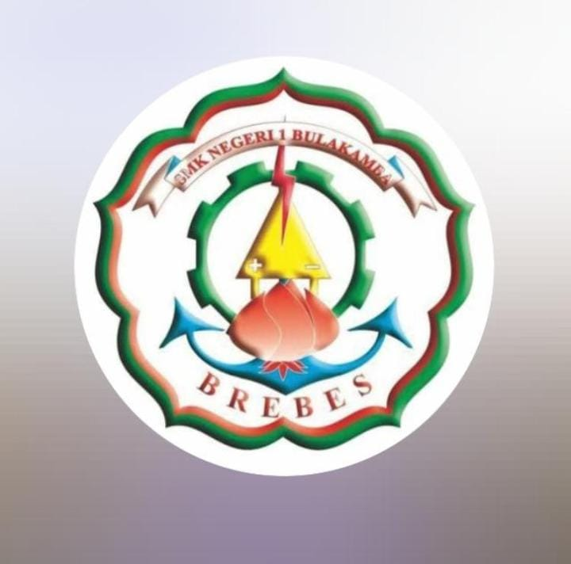
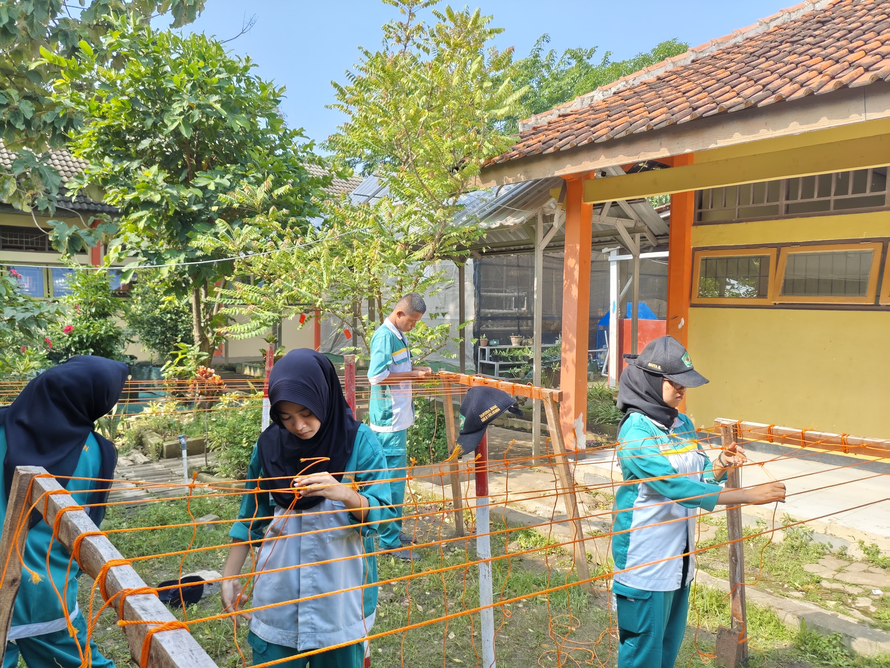
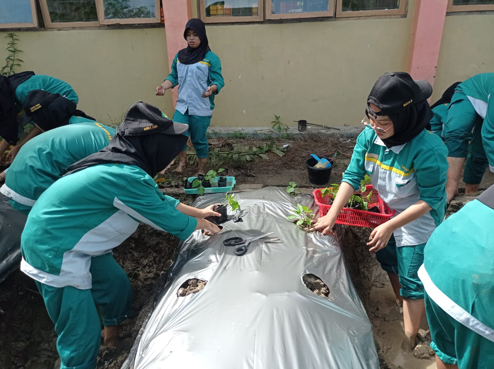
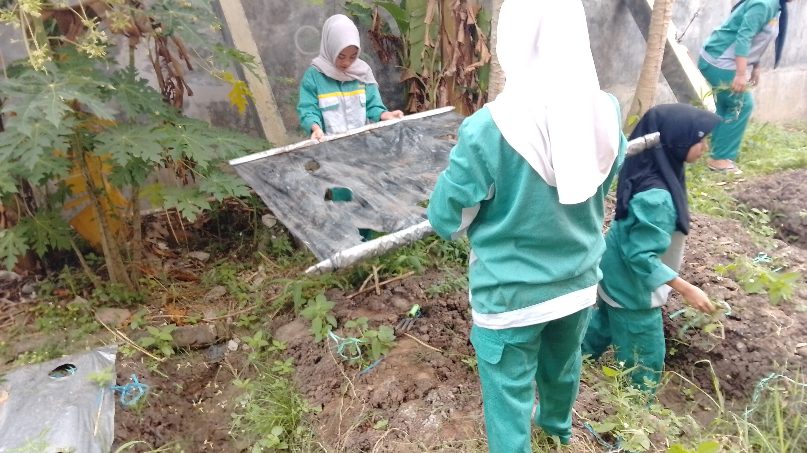
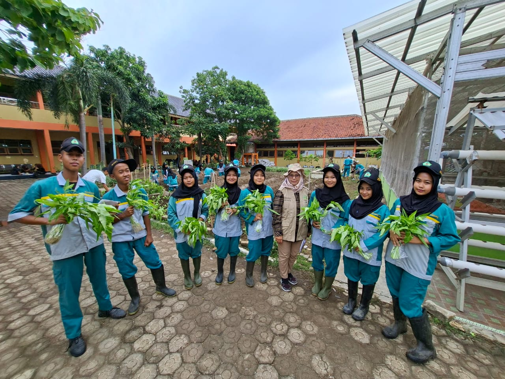

SMK Negeri 1 Bulakamba
Agronomy Culture
Inovasi • Teknologi • Budaya Pertanian Modern
Apa itu Agronomy Culture?
Agronomy Culture adalah wadah pengembangan ilmu pertanian modern yang mengintegrasikan praktik lapangan, inovasi teknologi, serta budaya kerja profesional di bidang agronomi di lingkungan SMK Negeri 1 Bulakamba.
Dokumentasi Kegiatan




🌦️ Musim Tanam di Indonesia
Pahami musim untuk menentukan waktu tanam yang tepat.
Musim Hujan
Nov – Apr. Cocok untuk padi, sayuran, umbi-umbian.
Musim Kemarau
Mei – Okt. Ideal untuk jagung, cabai, semangka.
Pancaroba
Peralihan musim. Waspada hama dan penyakit.
Dataran Tinggi
Iklim sejuk 15–25°C. Kopi, teh, kentang.